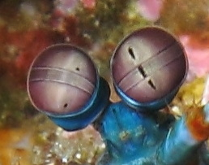
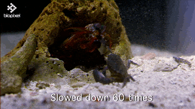

Facts about the Mantis Shrimp
General Information
Mantis shrimp, or stomatopods (scientific name: Odontodactylus scyllarus), are carnivorous marine crustaceans of the order Stomatopoda. They typically grow to around 10 cm in length, while a few can reach up to 38 cm. A mantis shrimp's carapace (the hard, thick shell that covers crustaceans and some other species) covers only the rear part of the head and the first four segments of the thorax. Varieties range in colour from shades of brown to vivid colours, with more than 450 species of mantis shrimp being known. They are among the most important predators in many shallow, tropical and subtropical marine habitats. However, despite being common, they are poorly understood, as many species spend most of their lives tucked away in burrows and holes.
Called "sea locusts" by ancient Assyrians, "prawn killers" in Australia, and now sometimes referred to as "thumb splitters"—because of the animal's ability to inflict painful wounds if handled incautiously—mantis shrimps have powerful raptorials that are used to attack and kill prey either by spearing, stunning, or dismembering. Some mantis shrimp species have specialised calcified "clubs" that can strike with great power, while others have sharp forelimbs used to seize the prey (hence the term "mantis" in its common name).
Scientific Classification
| Kingdom | Phylum | Subphylum | Class | Subclass | Order | Species |
|---|---|---|---|---|---|---|
| Animalia | Arthropoda | Crustacea | Malacostraca | Hoplocarida | Stomatopoda | Odontodactylus scyllarus |
A Myriad of Colors
The eyes of the mantis shrimp are mounted on mobile stalks and can move independently of each other. They are thought to have the most complex eyes in the animal kingdom and have the most complex visual system ever discovered. Compared with the three types of photoreceptor cells that humans possess in their eyes, the eyes of a mantis shrimp have between 12 and 16 types of photoreceptor cells. Furthermore, some of these shrimp can tune the sensitivity of their long-wavelength colour vision to adapt to their environment.
One Punch Arthropod
The mantis shrimp's second pair of thoracic appendages has been highly adapted for powerful close-range combat. The appendage differences divide mantis shrimp into two main types: those that hunt by impaling their prey with spear-like structures (known as Spearers) and those that smash prey with a powerful blow from a heavily mineralised club-like appendage (known as Smashers). A considerable amount of damage can be inflicted after impact with these robust, hammer-like claws.
Both types strike by rapidly unfolding and swinging their raptorial claws at the prey, and can inflict serious damage on victims significantly greater in size than themselves. In smashers, these two weapons are employed with blinding quickness, with an acceleration of 10,400 g (102,000 m/s2 or 335,000 ft/s2) and speeds of 83 km/h from a standing start. Because they strike so rapidly, they generate vapor-filled bubbles in the water between the appendage and the striking surface—known as cavitation bubbles . The collapse of these cavitation bubbles produces measurable forces on their prey in addition to the instantaneous forces of 1,500 newtons that are caused by the impact of the appendage against the striking surface, which means that the prey is hit twice by a single strike; first by the claw and then by the collapsing cavitation bubbles that immediately follow. Even if the initial strike misses the prey, the resulting shock wave can be enough to stun or kill.
